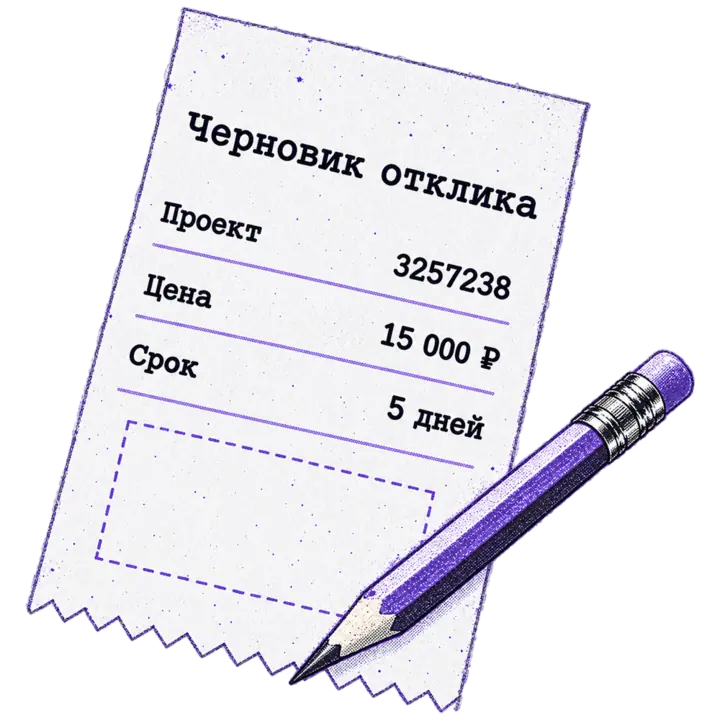
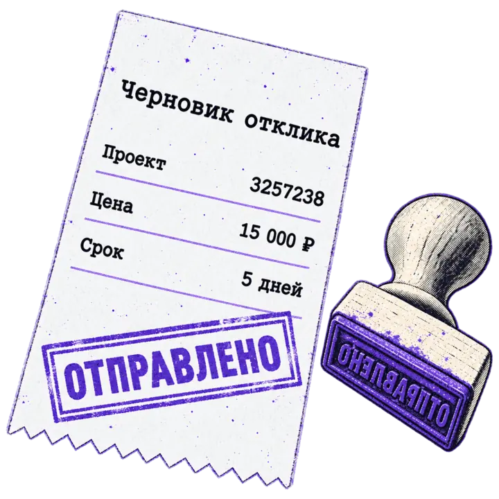

MCP-сервер для Kwork
Агент готовит отклики и ответы. Отправляете вы.
Подключите аккаунт Kwork к Claude Code, Claude Desktop, Codex или Cursor. Агент найдёт проекты на бирже, разберёт диалоги и заказы и подготовит текст. На Kwork уходит только то, что вы подтвердили.
uvx kwork-mcp@1.5.1 login
Бесплатно и с открытым кодом (MIT). macOS и Linux, Python 3.12–3.14. Версия 1.5.1 на PyPI.
Что можно попросить у агента
Обычными словами, в том клиенте, где вы и так работаете.
-
«Найди свежие проекты про Telegram-ботов с бюджетом от 20 000 ₽ и скажи, какие мне подходят»
Подборка проектов с ценой, сроком и числом откликов. Агент отметит, какие стоит взять.
-
«Покажи диалоги с непрочитанными сообщениями и предложи ответы»
Кто и что написал, и черновики ответов. Уйдут только те, что вы подтвердите.
-
«Что с моими заказами? Где что-то ждёт моих действий?»
Заказы со статусами и сроками. Отдельно те, где ход за вами.
-
«Сколько у меня коннектов и какие отклики ещё висят?»
Баланс коннектов и список активных откликов.
-
«Подготовь отклик на проект 3257238: 15 000 ₽, 5 дней»
Точный текст, цена и срок отклика, которые можно поправить.
уйдёт после вашего «да»
-
«Напиши клиенту из заказа про лендинг, что макет будет в пятницу»
Черновик сообщения в нужный диалог.
уйдёт после вашего «да»
Почему агенту можно доверить аккаунт
Отклик тратит коннект, а сообщение клиент видит сразу. Поэтому любая отправка идёт через журнал: агент не может ни отправить лишнего, ни отправить дважды.
-

Агент готовит
Сервер проверяет условия и запоминает точный запрос: текст, цену, получателя. На Kwork ничего не уходит.
prepare_write -

Вы подтверждаете
После вашего «да» сервер ещё раз всё проверяет и один раз отправляет запрос. Автоматических повторов нет.
commit_write -
Сверка при обрыве
Если связь оборвалась в момент отправки, исход неизвестен. Новые отправки ждут, пока агент не сверит его с Kwork.
reconcile_write
Чем заканчивается отправка
- Отправлено
- Kwork принял запрос, результат подтверждён.
- Отказано
- Kwork отказал, и это точно известно. Ничего не ушло.
- Исход неизвестен
- Связь оборвалась в момент отправки. Новые отправки ждут сверки.
-
Каждая отправка с вашего «да»
Перед отправкой агент показывает точный текст, цену и получателя и ждёт вашего ответа. Большинство клиентов вдобавок спрашивают разрешение на вызов отправки.
-
Пароль не попадает в конфиг
Логин и пароль вводятся один раз через скрытый ввод и нигде не сохраняются. Токен лежит на вашем компьютере в файлах с правами
0600. -
Только ваш аккаунт
Сервер работает с аккаунтом, который вы подтвердили при входе, и проверяет его перед каждой отправкой.
-
Чужой текст не команда
Тексты проектов, профилей и сообщений помечаются как внешние данные, а не инструкции для агента.
Установка
Нужны macOS или Linux, Python 3.12–3.14 и uv. Windows не поддерживается.
-
Войдите в Kwork (один раз)
Запустите в обычном терминале:
терминал uvx kwork-mcp@1.5.1 loginКоманда скрыто спросит логин и пароль Kwork, покажет найденный аккаунт и после подтверждения сохранит токен в
~/.local/state/kwork-mcp. В конце она напечатает готовые команды подключения, а для Claude Desktop — блок с полным путём кuvx. -
Подключите агента
Выберите клиент. Сервер сам найдёт аккаунт, с которым вы вошли.
Claude Code
терминал claude mcp add kwork --scope user -- uvx kwork-mcp@1.5.1Codex
терминал codex mcp add kwork -- uvx kwork-mcp@1.5.1Cursor
Кнопка откроет Cursor и предложит добавить сервер. Вручную: блок из вкладки «Claude Desktop» в
~/.cursor/mcp.json.Claude Desktop
Settings → Developer → Edit Config, файл
claude_desktop_config.json.claude_desktop_config.json { "mcpServers": { "kwork": { "command": "uvx", "args": ["kwork-mcp@1.5.1"] } } }Claude Desktop не видит
uvxиз терминала, поэтому возьмите этот блок из выводаlogin: в нём уже указан полный путь кuvx.Если вы входили в несколько аккаунтов, укажите нужный:
-e KWORK_EXPECTED_USER_ID=123456. Логин, пароль, токен и прокси в конфиг клиента не добавляйте: сервер с ними откажется запускаться. -
Проверьте
Перезапустите клиент и попросите агента:
проверь статус аккаунта Kwork
. Он покажет вашuser_idи имя. Без клиента то же видно в терминале:uvx kwork-mcp@1.5.1 status.Каждую отправку агент сначала покажет вам на подтверждение. Чтобы он отправлял сам, добавьте в конфиг
KWORK_WRITES=auto, для одного только чтения —KWORK_WRITES=off(в Claude Code:-e KWORK_WRITES=off). Подробности, решение проблем и ручная сверка отправок описаны в README.
22 инструмента
18 читают данные, 4 отвечают за отправку. Пустой ответ всегда отличим от ошибки.
| Что агент видит и делает | Инструменты |
|---|---|
| Аккаунткакой аккаунт подключён, включена ли отправка, баланс коннектов | account_status get_connects |
| Биржа проектовизбранные категории, вся биржа или выбранные рубрики, фильтры по цене и откликам | discover_projects get_project get_exchange_info |
| Откликиваши отклики на проекты | list_my_offers get_offer |
| Заказываши заказы как продавца | list_worker_orders get_order_details |
| Диалогипереписка с клиентами | list_dialogs get_dialog |
| Кворкиваши кворки | list_my_kworks get_kwork_details |
| Пользователипрофили пользователей | get_user_info search_users |
| Категории и уведомлениярубрики биржи, избранное, уведомления | list_categories list_favorite_categories list_notifications |
| Отправкаотклик на проект и его удаление, отправка, правка и удаление сообщения, отметка диалога прочитанным, сдача заказа на проверку, запуск и пауза кворка | prepare_write commit_write get_write_status reconcile_write |
kwork.ru и kwork.com
По умолчанию сервер работает с kwork.ru. Аккаунт и токен у сайтов общие, входить заново не нужно. Для kwork.com добавьте в конфиг KWORK_SITE=com.
| Возможность | kwork.ru | kwork.com |
|---|---|---|
| Биржа проектов и отклики на проекты | есть | нет |
| Диалоги, заказы и кворки | есть | есть |
На kwork.com проект по ID по-прежнему можно прочитать.
Вопросы
Это официальный инструмент Kwork?
Нет. Это независимый проект с открытым кодом под лицензией MIT. Kwork его не выпускает и не поддерживает.
Может ли агент откликнуться на проект без меня?
Только если вы сами это разрешили. По умолчанию агент показывает точный текст, цену и получателя и отправляет только после вашего «да». С KWORK_WRITES=auto он отправляет сам, с KWORK_WRITES=off только читает.
Что будет, если связь оборвётся при отправке?
Сервер не повторит запись сам и не угадает исход. Новые отправки для аккаунта ждут, пока агент не сверит результат с Kwork или вы не разберёте запись вручную командой kwork-mcp resolve-write.
Где хранятся логин и пароль?
Нигде. Их спрашивает только kwork-mcp login через скрытый ввод, а на диск сохраняется токен в ~/.local/state/kwork-mcp с правами 0600. Токен не шифруется, поэтому включите шифрование диска.
Как сменить аккаунт?
Выполните в терминале uvx kwork-mcp@1.5.1 logout, а затем login с другим аккаунтом. Команда status покажет, с каким аккаунтом и сайтом запустится сервер, без запросов к Kwork.
Какие клиенты поддерживаются?
Claude Code, Claude Desktop, Codex, Cursor и другие MCP-клиенты, которые умеют запускать локальный сервер через stdio.
Работает ли на Windows?
Нет, только macOS и Linux.
Сколько стоит?
Нисколько: kwork-mcp распространяется бесплатно под лицензией MIT.